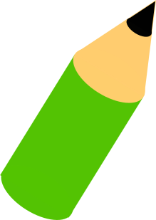
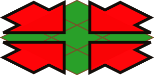
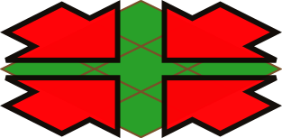
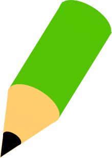

IPSJ Programming Contest Committee
2019/07/30
The SamurAI Dig Here page is a tool to experience the game of SamurAI Dig Here game on HTML browsers.
The figure below shows a sample display image of the page.
The game field is divided into grid-aligned cells.
Four agents, one samurai and one dog for each side, are initially located on the four corners of the game field. Samurai can move to one of the four neighboring cells in one game step, while dogs can move to one of eight neighboring cells.

Initially, some of the cells in the game field are with a hole, which game agents cannot step into.
Samurai can plug the hole in one of its four neighboring cells in stead of moving there, while dogs cannot.

Some randomly chosen cells have some amount of hidden embedded gold, which are hidden.
You can choose another randomly constructed field configuration
by clicking the reinitialize button
 on the upper left corner.
on the upper left corner.
The initial play mode is automatic. In the automatic mode, the computer chooses the moves of the agents in each step.

The game progresses controlled using some of the buttons on the top. Buttons and their functions are as described below.
In the manual play mode, one of the two samurai can be controlled manually.
Clicking the manual play button
 on the top right changes the play mode to manual.
on the top right changes the play mode to manual.
The first click on the button makes the red samurai controlled
manually. The button changes its color to red
 .
All the other agents, dogs and the blue samurai, are
still controlled by the computer.
.
All the other agents, dogs and the blue samurai, are
still controlled by the computer.
Another click makes the blue samurai under manually control,
and changes the button color to blue
 .
The computer will start controlling the red samurai,
as well as dogs.
.
The computer will start controlling the red samurai,
as well as dogs.
Still another click will revert the play mode to automatic, reverting the button color to the original.

When the play mode is manual, arrow symbols are displayed on cells around the manually controlled agent, showing possible plays. Arrows on cells with a hole outlined red. Clicking the cells marked with arrows tells the following.
Actions of the samurai can also be told by key presses. The keys and their meaning are as follows.
| h w ← | Specifies the upper left cell (↖) |
|---|---|
| j s ↓ | Specifies the lower left cell (↙) |
| k n ↑ | Specifies the upper right cell (↗) |
| l e → | Specifies the lower right cell (↘) |
| . space | Specifies to pause without any actions |
Automatic step play by the step forward button
 ,
automatic repetitive play by the play button
,
automatic repetitive play by the play button
 ,
and game initialization by the rewind button
,
and game initialization by the rewind button
 are also possible in the manual play mode.
When the play stops, the play mode is kept to be manual.
are also possible in the manual play mode.
When the play stops, the play mode is kept to be manual.
Information on the game state is also displayed on the screen.

The current step number and the maximum number of steps are displayed on the top row to the right of the clock icon.

The total units of gold not dug out yet, either hidden or made apparent,
is displayed on the top to the left of the gold button
 .
Positions and amounts of hidden gold can be displayed
by pressing down the gold button.
.
Positions and amounts of hidden gold can be displayed
by pressing down the gold button.

Scores (number of units of gold so far obtained) of both teams are displayed on the bottom.
Edit mode is enabled by clicking the edit button  on top of the screen. The edit mode enables editing, saving, and loading the configuration of the game field.
The game is brought back to its initial state,
and the following changes are made on the screen.

 In the edit mode, the border of the cell with the mouse pointer
becomes white, and
the following editing are available on the cell.
In the edit mode, the border of the cell with the mouse pointer
becomes white, and
the following editing are available on the cell.
Pressing a mouse button on a cell with an agent on it, and dragging the mouse moves the agent another cell. When the mouse button is released on a cell with embedded gold or a hole, the agent moves to the cell the mouse cursor was previously on.
If a shift key is pressed when the mouse mouse button is pressed, the agent rotates clockwise. This also takes place when the mouse is not dragged, that is, when the cell with an agent is simply clicked with a shift key pressed. Note that, although this changes the appearance of the agent in the initial state, it has no influence on the game play.
The amount of embedded gold in a cell can be increased or decreased by clicking the mouse button on the cell. With a mouse click without pressing a shift key decreases the amount by 2. When the amount becomes 0, the cell loses embedded gold. With a mouse click with pressing a shift key increases the amount by 2. With a mouse click on a cell with pressing a shift key on a cell without any gold, the cell is given with embedded gold of amount 2. When a control key is pressed on a click, the amount of increase/decrease is multiplied by ten.
With a mouse click on a cell without an agent nor any embedded gold, a new hole is dug out on the cell, if none is there. If the cell already has a hole, it is plugged up.
Clicking the expand button
 increments the number of cells in one side of the field,
and clicking the shrink button

decrements it.
The size cannot be made smaller than 6 nor larger than 20.
Agents on cells lost on resize will be moved to some other cells.
Any holes and embedded gold in the lost cells or on the cell
to which an agent is moved will be lost.
increments the number of cells in one side of the field,
and clicking the shrink button

decrements it.
The size cannot be made smaller than 6 nor larger than 20.
Agents on cells lost on resize will be moved to some other cells.
Any holes and embedded gold in the lost cells or on the cell
to which an agent is moved will be lost.
The maximum number of steps of the game can be
incremented or decremented by
a mouse click or mouse wheel rotation on the clock icon
 while in the edit mode.
Clicking the icon while pressing a shift key
increments the maximum number of steps and
decrements otherwise.
Rotating the wheel up or down increments or decrements it
respectively.
When a control key is pressed, the change amount is multiplied by 10.
It cannot be set to be less than 10.
while in the edit mode.
Clicking the icon while pressing a shift key
increments the maximum number of steps and
decrements otherwise.
Rotating the wheel up or down increments or decrements it
respectively.
When a control key is pressed, the change amount is multiplied by 10.
It cannot be set to be less than 10.
The current configuration can be saved to the storage of the browser and loaded afterwards. This storage is kept in the browser, and will not be lost when the page is reloaded and/or the browser is restarted, but cannot be accessed from other browsing applications on the same system.

Clicking the save button
 on the screen top, a dialog window to enter a configuration name
pops up.
When a name is entered, the current configuration is saved
with that name.
on the screen top, a dialog window to enter a configuration name
pops up.
When a name is entered, the current configuration is saved
with that name.

Clicking the load button
 on the screen top, a list of names of saved configurations appears.
Choosing one of them will load the configuration with that name.
on the screen top, a list of names of saved configurations appears.
Choosing one of them will load the configuration with that name.
Clicking the remove button
 on the screen top, a list of names of saved configurations appears.
Choosing one of them will remove the configuration with that name
from the storage.
on the screen top, a list of names of saved configurations appears.
Choosing one of them will remove the configuration with that name
from the storage.
Clicking the import button
 or the export button
or the export button
 on the screen top is planned to have functionalities
of reading in and writing out configurations
from and to a file,
which yet to be implemented.
on the screen top is planned to have functionalities
of reading in and writing out configurations
from and to a file,
which yet to be implemented.
The edit mode button  on the screen top will end the edit mode. The game is reset to the initial state of the edited configuration.